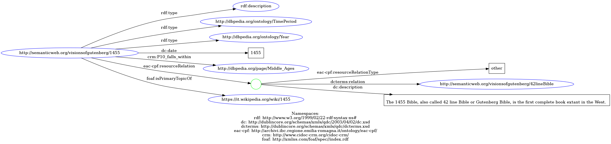
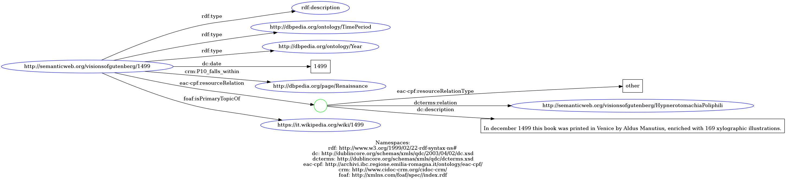

date/1455
1499
URI: http://semanticweb.org/visionsofgutenberg/1455
<?xml version="1.0" encoding="UTF-8"?>
<rdf:RDF xmlns:rdf="http://www.w3.org/1999/02/22-rdf-syntax-ns#"
xmlns:dc="http://dublincore.org/schemas/xmls/qdc/2003/04/02/dc.xsd"
xmlns:dcterms="http://dublincore.org/schemas/xmls/qdc/dcterms.xsd"
xmlns:eac-cpf="http://archivi.ibc.regione.emilia-romagna.it/ontology/eac-cpf/"
xmlns:crm="http://www.cidoc-crm.org/cidoc-crm/"
xmlns:foaf="http://xmlns.com/foaf/spec//index.rdf"
xml:base="http://semanticweb.org/visionsofgutenberg/1455">
<rdf:description rdf:about="http://semanticweb.org/visionsofgutenberg/1455">
<rdf:type rdf:resource="http://dbpedia.org/ontology/TimePeriod"/>
<rdf:type rdf:resource="http://dbpedia.org/ontology/Year"/>
<dc:date>1455</dc:date>
<crm:P10_falls_within rdf:resource="http://dbpedia.org/page/Middle_Ages"/>
<eac-cpf:resourceRelation rdf:parseType="Resource">
<eac-cpf:resourceRelationType>other</eac-cpf:resourceRelationType>
<dcterms:relation rdf:resource="http://semanticweb.org/visionsofgutenberg/42lineBible"/>
<dc:description>The 1455 Bible, printed by Gutenberg, also called 42 line Bible or Gutenberg Bible, is the first complete book extant in the West.</dc:description>
</eac-cpf:resourceRelation>
<foaf:isPrimaryTopicOf rdf:resource="https://it.wikipedia.org/wiki/1455"/>
</rdf:description>
</rdf:RDF>
@prefix rdf: <http://www.w3.org/1999/02/22-rdf-syntax-ns#>.
@prefix crm: <http://www.cidoc-crm.org/cidoc-crm/>.
@prefix dc: <http://purl.org/dc/elements/1.1/>.
@prefix foaf: <http://xmlns.com/foaf/0.1/>.
@prefix eac-cpf: <http://archivi.ibc.regione.emilia-romagna.it/ontology/eac-cpf/>.
@prefix dcterms <http://dublincore.org/schemas/xmls/qdc/dcterms.xsd>.
<http://semanticweb.org/visionsOfGutenberg/1455>
rdf:type <http://dbpedia.org/ontology/TimePeriod> ;
rdf:type <http://dbpedia.org/ontology/Year> ;
dc:date '1455' ;
eac-cpf:resourceRelation [
eac-cpf:resourceRelationType 'Other' ;
dcterms:relation <http://semanticweb.org/visionsOfGutenberg/42LineBible> ;
dc:description 'The 1455 Bible, also called 42 line Bible or Gutenberg Bible, is the first complete book extant in the West.' ;
] ;
foaf:isPrimaryTopicOf <https://it.wikipedia.org/wiki/1455> ;
crm:P10_falls_within <http://dbpedia.org/page/Middle_Ages> .

date/1499
1455
URI: http://semanticweb.org/visionsofgutenberg/1499
<?xml version="1.0" encoding="UTF-8"?>
<rdf:RDF xmlns:rdf="http://www.w3.org/1999/02/22-rdf-syntax-ns#"
xmlns:dc="http://dublincore.org/schemas/xmls/qdc/2003/04/02/dc.xsd"
xmlns:dcterms="http://dublincore.org/schemas/xmls/qdc/dcterms.xsd"
xmlns:eac-cpf="http://archivi.ibc.regione.emilia-romagna.it/ontology/eac-cpf/"
xmlns:crm="http://www.cidoc-crm.org/cidoc-crm/"
xmlns:foaf="http://xmlns.com/foaf/spec//index.rdf"
xml:base="http://semanticweb.org/visionsofgutenberg/1499">
<rdf:description rdf:about="http://semanticweb.org/visionsofgutenberg/1499">
<rdf:type rdf:resource="http://dbpedia.org/ontology/TimePeriod"/>
<rdf:type rdf:resource="http://dbpedia.org/ontology/Year"/>
<dc:date>1499</dc:date>
<crm:P10_falls_within rdf:resource="http://dbpedia.org/page/Renaissance"/>
<eac-cpf:resourceRelation rdf:parseType="Resource">
<eac-cpf:resourceRelationType>other</eac-cpf:resourceRelationType>
<dcterms:relation rdf:resource="http://semanticweb.org/visionsofgutenberg/HypnerotomachiaPoliphili"/>
<dc:description>
In december 1499 this book was printed in Venice by Aldus Manutius, enriched with 169 xylographic illustrations.
</dc:description>
</eac-cpf:resourceRelation>
<foaf:isPrimaryTopicOf rdf:resource="https://it.wikipedia.org/wiki/1499"/>
</rdf:description>
</rdf:RDF>
@prefix rdf: <http://www.w3.org/1999/02/22-rdf-syntax-ns#>.
@prefix crm: <http://www.cidoc-crm.org/cidoc-crm/>.
@prefix dc: <http://purl.org/dc/elements/1.1/>.
@prefix foaf: <http://xmlns.com/foaf/0.1/>.
@prefix eac-cpf: <http://archivi.ibc.regione.emilia-romagna.it/ontology/eac-cpf/>.
@prefix dcterms <http://dublincore.org/schemas/xmls/qdc/dcterms.xsd>.
<http://semanticweb.org/visionsOfGutenberg/1499>
rdf:type <http://dbpedia.org/ontology/TimePeriod> ;
rdf:type <http://dbpedia.org/ontology/Year> ;
dc:date '1499' ;
eac-cpf:resourceRelation [
eac-cpf:resourceRelationType 'Other' ;
dcterms:relation <http://semanticweb.org/visionsOfGutenberg/HypnerotomachiaPoliphili> ;
dc:description 'In december 1499 this book was printed in Venice by Aldus Manutius, enriched with 169 xylographic illustrations.' ;
] ;
time:hasTSR <http://www.opengis.net/def/uom/ISO-8601/0/Gregorian> ;
foaf:isPrimaryTopicOf <https://it.wikipedia.org/wiki/1499> ;
crm:P10_falls_withins <http://dbpedia.org/page/Renaissance> .
